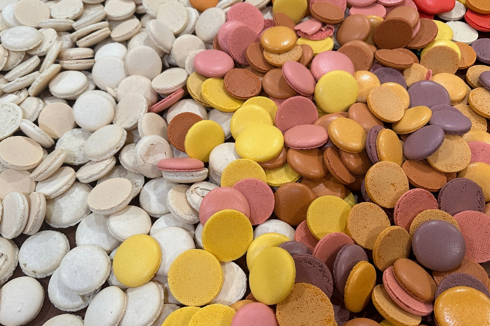
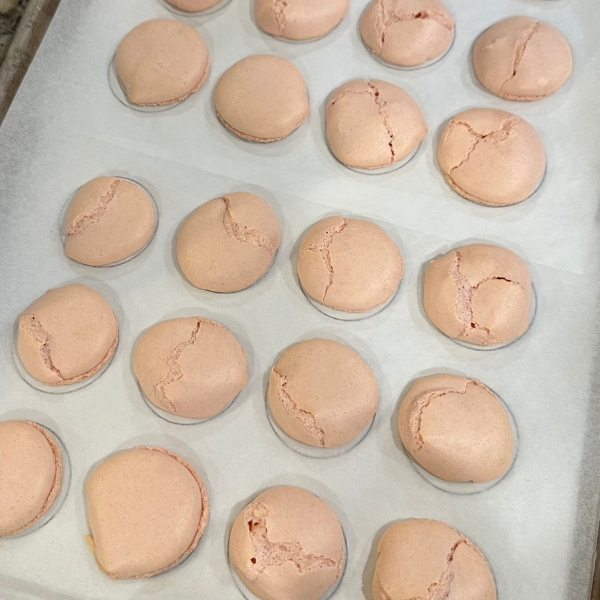
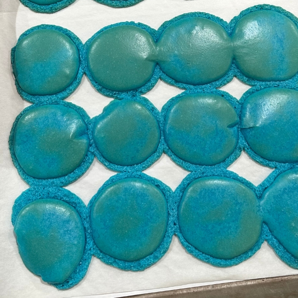
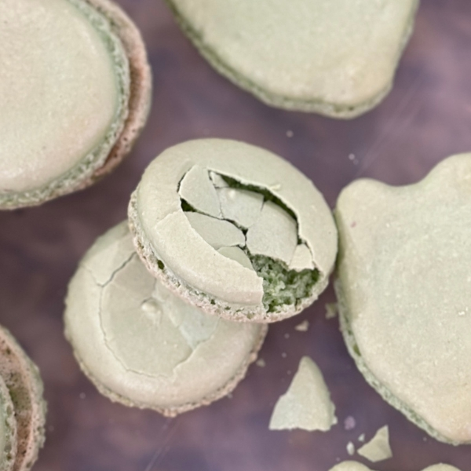
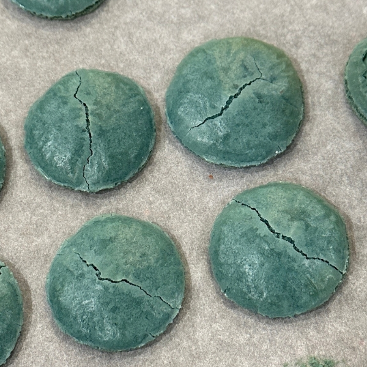
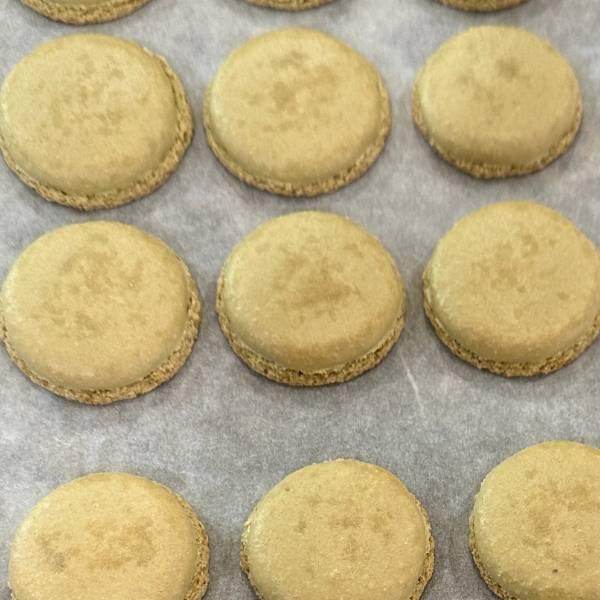
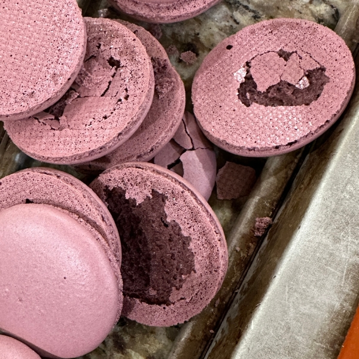
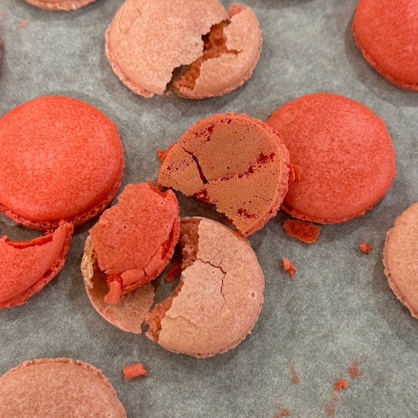
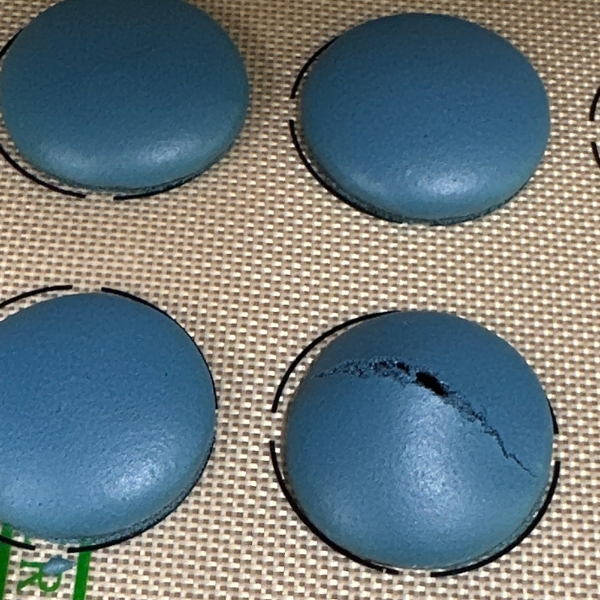

Flops to Fabulous
A journey of Persistance and growth

I come from a background of owning and running a bakery for over 10 years. So when I read about Macarons being finicky and hard to make... I thought, these people don't know who they are dealing with - This is what I do... I break recipes down to train other people. Well... needless to say, I didn't know what I was dealing with.
I would try and try and try and try and try... and every time i failed.
Seriously I did.







